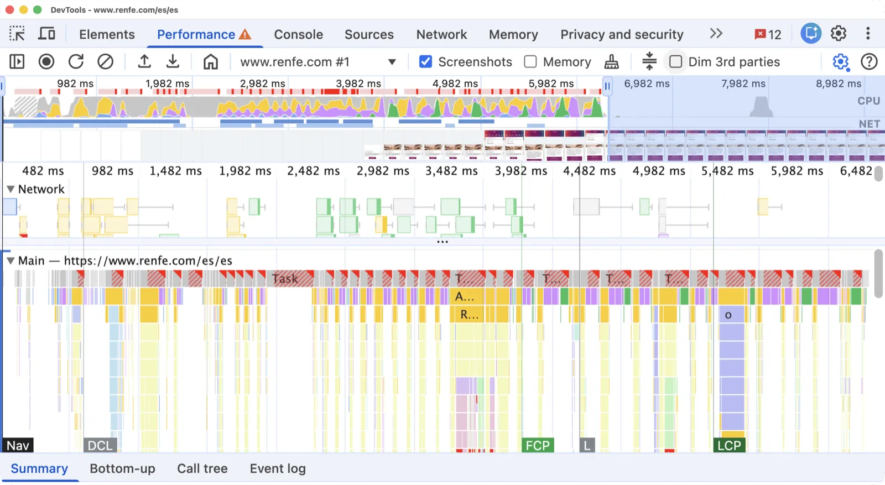

El árbol de accesibilidad frágil
Por qué el HTML semántico es clave para el rendimiento web
Joan León · A11y Conf 2026
Notas
Hola a todas y a todos. Soy Joan León y esta charla va de un árbol que casi nadie ve, pero que usan cada día millones de personas: el árbol de accesibilidad.
Vamos a ver por qué es frágil, qué lo rompe, y por qué cuidarlo hace que la web sea a la vez más accesible y más rápida.
Sigue la charla desde tu dispositivo
nucliweb.github.io/el-arbol-de-accesibilidad-fragil
- N muestra u oculta las notas de cada diapositiva.
- D muestra todas las diapositivas en una sola página.
- ? abre la ayuda, donde puedes desactivar los atajos de una tecla.
- Las flechas, o los botones Anterior y Siguiente, cambian de diapositiva.
Notas
Antes de empezar: estas diapositivas están publicadas en la dirección que veis en pantalla. Cada diapositiva tiene notas como estas, escritas para que podáis seguir la charla leyendo, con un lector de pantalla o más tarde, cuando la reviséis.
Pulsad la tecla N para ver las notas o la D para leer todas las diapositivas seguidas como un documento. Si los atajos de una tecla os molestan con vuestro lector de pantalla, se pueden desactivar desde la ayuda, con la tecla de interrogación.
Y gracias a la intérprete de lengua de signos por acompañarnos hoy.
Joan León
Consultor de rendimiento web en PerfReviews.
Notas
Me dedico al rendimiento web. En PerfReviews ayudamos a empresas a que sus webs carguen y respondan más rápido. El año pasado di aquí una lightning talk sobre este tema y me quedé con ganas de contar mucho más: esta es la versión larga, con datos nuevos.
Una web lenta es una web menos accesible
El rendimiento web es accesibilidad: decide quién puede usar tu web y quién no.
Notas
Empiezo con una idea que a veces se nos olvida: el rendimiento web no es solo una cuestión de negocio o de SEO. Una web que tarda diez segundos en responder en un móvil barato con una conexión mala no es lenta para esa persona: es inutilizable. Optimizar el rendimiento es facilitar el acceso a quien tiene peor conexión o un dispositivo de gama baja.
¿Quién tiene el dispositivo más lento?
- Las personas con discapacidad tienen más barreras para entrar y mantenerse en el mercado laboral, y con ellas menos acceso a tecnología reciente.
- Muchas personas que usan tecnología de asistencia evitan actualizar: un cambio puede romper la única forma que tienen de usar el ordenador.
- Un Android barato con TalkBack es la puerta de entrada a internet para mucha gente.
Fuente: Eric Bailey, Accessible is Performant, performance.now() 2024.
Notas
Y aquí está la conexión que más me importa. ¿Quién tiene el dispositivo más lento? Como explica Eric Bailey, las personas con discapacidad tienen más barreras para acceder al empleo, y por tanto a tecnología reciente. Además, muchas personas que usan tecnología de asistencia no actualizan su sistema ni su navegador por miedo, justificado, a que se rompa lo único que les funciona.
Es decir: las personas que más dependen de que la web funcione bien son, con frecuencia, las que la usan en peores condiciones.
Así se ve una web que bloquea el hilo principal

Notas
Esta es una grabación del panel Performance de Chrome cargando la web de Renfe. Arriba está la red, con muchas peticiones en paralelo. Debajo, el hilo principal del navegador: durante más de seis segundos está ocupado casi sin descanso, con bloques amarillos de JavaScript y morados de estilos y layout.
Mientras el hilo principal está ocupado, el navegador no puede responder a nadie: ni a quien hace clic, ni a quien pulsa una tecla, ni a la tecnología de asistencia que le pregunta qué hay en pantalla. El elemento más grande de la página no aparece hasta casi los seis segundos.
Los milisegundos también suenan
Tiempo desde que se pulsa una tecla hasta que el lector de pantalla empieza a hablar, en un equipo lento:
230–250 ms → 190–200 ms
Marco Zehe, optimización del árbol de accesibilidad de Firefox 67 (2019), citado por Eric Bailey.
Notas
Para quien usa un lector de pantalla, el rendimiento se oye. En 2019, Marco Zehe, que trabajaba en la accesibilidad de Firefox, consiguió reducir el tiempo desde que se pulsa una tecla hasta que el lector empieza a hablar: en un equipo lento, de unos 240 milisegundos a unos 195.
¿Cómo lo consiguió? Creando menos objetos accesibles para los div que no aportan nada. Menos nodos, menos trabajo, menos espera. Quedaos con esta idea, porque es la tesis de la charla.
Cómo pinta un navegador
- HTML → DOM
- CSS → CSSOM
- Cálculo de estilos
- Árbol de accesibilidad
- Layout
- Pintado
- Composición
El árbol de accesibilidad se construye a partir del DOM después de calcular los estilos: display: none o el content de un pseudoelemento lo cambian.
Notas
Repasemos muy rápido qué hace el navegador. Descarga el HTML y construye el DOM. Descarga el CSS y construye el CSSOM. Calcula qué estilos se aplican a cada elemento, calcula dónde va cada cosa, que es el layout, pinta y compone la imagen final.
Y en paralelo, cuando hay una tecnología de asistencia escuchando, construye el árbol de accesibilidad. Fijaos en el orden: se construye después de calcular los estilos, porque el CSS también lo cambia. Un elemento con display none desaparece del árbol, y el texto de un pseudoelemento before o after aparece en él. Así que no, el CSS no es solo presentación.
DOM + ARIA → árbol de accesibilidad
HTML
<fieldset>
<legend>Tono de llamada</legend>
<input type="radio" id="calisto"
name="tono" checked>
<label for="calisto">Calisto</label>
</fieldset>Árbol de accesibilidad
group "Tono de llamada"
radio "Calisto" checked: trueCada nodo tiene nombre, rol, estado y, si hace falta, descripción. Con HTML semántico, el navegador los rellena por ti.
Notas
A la izquierda, un grupo de radio buttons en HTML: un fieldset con su legend, un input de tipo radio y su label. A la derecha, lo que el navegador entrega a la tecnología de asistencia: un grupo llamado "Tono de llamada" y dentro un radio llamado "Calisto" que está marcado.
Cada objeto del árbol tiene un nombre, un rol, un estado y opcionalmente una descripción. Con HTML semántico todo eso sale gratis, sin escribir una sola línea de ARIA ni de JavaScript.
No es un árbol: es un bosque
- Cada sistema operativo tiene su API: NSAccessibility en macOS, UI Automation e IAccessible2 en Windows, AT-SPI en Linux.
- El árbol vive fuera de la página: el navegador lo envía a otro proceso, y la tecnología de asistencia lo consulta a través del sistema.
- Si la página cambia más rápido de lo que el árbol se actualiza, lo que oye la persona ya no coincide con lo que hay en pantalla.
Notas
Hablamos del árbol de accesibilidad como si fuera uno, pero en realidad es un bosque. Cada sistema operativo tiene su propia API de accesibilidad, y el navegador traduce la página a cada una de ellas.
Además, ese árbol vive fuera de la página: hay que enviarlo a otro proceso. Cuanto más grande y cambiante es el DOM, más datos viajan y más tarda en actualizarse. Y si la página cambia más deprisa de lo que el árbol se sincroniza, la persona que no ve la pantalla puede activar un control que ya no está, o que está en otro estado. Por eso decimos que es frágil.
El día que VoiceOver dejó de hablar
Una auditoría de una app de formación médica, hecha con Material Design. VoiceOver se colgaba siempre en la misma pantalla: una lista enorme de radio buttons.
Priorizar la ergonomía del desarrollo sin tener en cuenta el HTML que genera puede acabar muy mal.
Eric Bailey, Accessible is Performant, performance.now() 2024 (traducción propia).
Notas
Esta charla nace de una historia que contó Eric Bailey en 2024. Estaba auditando una app de formación médica construida con Material Design y, en una pantalla, VoiceOver dejaba de hablar. Reinició Safari, limpió la caché, reinició el ordenador: siempre igual. El culpable era un montón de radio buttons de Material inyectados en la página. Cuando los cambiaron por radios nativos, VoiceOver dejó de colgarse.
La frase original es: "prioritizing developer ergonomics without considering the generated HTML it produces can lead to bad things happening". Yo quería saber si eso sigue pasando hoy, en 2026, con los componentes que usamos ahora.
Un radio button nativo
<div class="radio">
<input type="radio" name="ringtone" id="moon-0" value="moon-0" checked>
<label for="moon-0">Calisto</label>
</div>131 caracteres. 0 bytes de JavaScript.
Notas
He montado un banco de pruebas con seis implementaciones del mismo grupo de radio buttons: un título "Ajustes", un grupo "Tono de llamada" y N opciones. Todo el código está en el repositorio de la charla. Cada implementación se ha montado siguiendo su documentación oficial.
Esta es la referencia: el radio nativo. Un div, un input y un label. Ciento treinta y un caracteres y ni un byte de JavaScript.
shadcn/ui con Radix
<div role="group" data-slot="field" data-orientation="horizontal" class="…">
<button type="button" role="radio" aria-checked="true"
data-state="checked" value="moon-0" data-slot="radio-group-item"
id="moon-0" tabindex="-1" data-radix-collection-item class="…">
<span data-state="checked" data-slot="radio-group-indicator" class="…">
<span class="…"></span>
</span>
</button>
<label data-slot="field-label" for="moon-0" class="…">Calisto</label>
</div>2.475 caracteres (las clases están recortadas con «…»). 275 KB de JavaScript.
Notas
Ahora shadcn/ui con Radix, probablemente lo más usado hoy en proyectos React. Aquí no hay ningún input: hay un botón al que se le pone el rol radio con ARIA, un estado aria-checked que mantiene JavaScript, y dos spans para dibujar el círculo. He recortado las clases de Tailwind con puntos suspensivos; sin recortar, una sola opción ocupa casi dos mil quinientos caracteres.
Un dato curioso: la versión actual de shadcn ya no usa Radix por defecto, sino Base UI, que en vez de un botón genera un span con rol radio y un input oculto. También está en el banco de pruebas.
MUI
<label class="MuiFormControlLabel-root …">
<span class="MuiButtonBase-root MuiRadio-root … Mui-checked …">
<input class="PrivateSwitchBase-input …" type="radio"
value="moon-0" checked name="ringtone">
<span class="…">
<svg … aria-hidden="true" viewBox="0 0 24 24"><path d="…"></path></svg>
<svg … aria-hidden="true" viewBox="0 0 24 24"><path d="…"></path></svg>
</span>
</span>
<span class="MuiTypography-root … MuiFormControlLabel-label …">Calisto</span>
</label>1.119 caracteres. 329 KB de JavaScript.
Notas
MUI sí usa un input nativo, y eso es bueno para la accesibilidad. Pero lo envuelve en spans, lo oculta visualmente y dibuja el círculo con dos SVG. Y cada vez que haces clic, añade elementos para el efecto ripple. Son 329 kilobytes de JavaScript para la página de ejemplo.
Material Web
<md-radio id="moon-0" name="ringtone" value="moon-0" checked tabindex="0">
#shadow-root
<div aria-hidden="true" class="container checked">
<md-ripple aria-hidden="true">#shadow-root <div class="surface"></div></md-ripple>
<md-focus-ring aria-hidden="true"></md-focus-ring>
<svg class="icon" viewBox="0 0 20 20">… una máscara y tres círculos …</svg>
<div class="touch-target"></div>
</div>
</md-radio>
<label for="moon-0">Calisto</label>821 caracteres, con su shadow DOM. 41 KB de JavaScript.
Notas
Y Material Web, los web components de Google, sucesores de la librería que auditó Eric. Un elemento md-radio con su propio shadow DOM, que contiene otros dos web components con su shadow DOM, un SVG y varios divs. El rol de radio lo pone con JavaScript a través de ElementInternals. Es el más ligero en JavaScript, 41 kilobytes, pero ya veréis que el peso no lo es todo.
Lo que cuesta una opción
| Implementación | Elementos | Atributos | Profundidad | Selectores CSS | JavaScript |
|---|---|---|---|---|---|
| Nativo | 5 | 7 | 3 | 5 | 0 KB |
| shadcn (Base UI) | 9 | 36 | 6 | 304 | 275 KB |
| shadcn (Radix) | 8 | 33 | 6 | 304 | 275 KB |
| MUI | 12 | 25 | 7 | 35 | 329 KB |
| Material Web | 16 | 36 | 7 | 45 | 41 KB |
Elementos, atributos y profundidad del bloque medido, incluido el shadow DOM. JavaScript descomprimido de toda la página.
Notas
Con una sola opción, las diferencias parecen pequeñas: el nativo usa cinco elementos y siete atributos; el resto, entre ocho y dieciséis elementos y entre veinticinco y treinta y seis atributos. La diferencia grande está en el JavaScript: cero frente a entre 41 y 329 kilobytes.
Pero nadie hace un formulario de una opción. Veamos qué pasa cuando hay muchas.
Con 100 opciones
| Implementación | Elementos | Tiempo de bloqueo (TBT) | Respuesta al clic |
|---|---|---|---|
| Nativo | 302 | 0 ms | < 16 ms |
| shadcn (Base UI) | 405 | 160 ms | 120 ms |
| shadcn (Radix) | 305 | 150 ms | 112 ms |
| MUI | 903 | 139 ms | 208 ms |
| Material Web | 1.402 | 283 ms | 104 ms |
La respuesta al clic se mide con Event Timing, que no registra eventos de menos de 16 ms. Por encima de 200 ms, el INP deja de considerarse bueno.
Notas
Con cien opciones, y la CPU ralentizada cuatro veces para simular un móvil normal, el radio nativo no bloquea el hilo principal ni un milisegundo, y el clic responde en menos de dieciséis milisegundos, que es lo mínimo que se puede medir.
Los componentes de framework bloquean entre 139 y 283 milisegundos al cargar. Y el clic de MUI tarda 208 milisegundos: ya supera el umbral de 200 que Google considera bueno para el INP, solo por los radio buttons de la página.
Un clic, con un lector de pantalla escuchando
| Implementación | Milisegundos | Barra proporcional |
|---|---|---|
| Nativo | 2,6 | |
| Nativo con estilos | 3,2 | |
| shadcn (Base UI) | 185 | |
| shadcn (Radix) | 446 | |
| Material Web | 453 | |
| MUI | 1.189 |
Chrome con --force-renderer-accessibility, lo que ocurre cuando hay un lector de pantalla en marcha. Con 100 opciones: 1 ms en el nativo frente a 36 ms en MUI.
Notas
Este es para mí el dato más importante de la charla. Chrome solo construye el árbol de accesibilidad cuando detecta una tecnología de asistencia. Se puede forzar con una opción de arranque, y entonces las trazas de rendimiento muestran el trabajo de accesibilidad con nombre propio.
Medimos un solo clic en una página con mil radio buttons. En el nativo, el navegador dedica 2,6 milisegundos a actualizar el árbol de accesibilidad. En shadcn, entre 185 y 446. En Material Web, 453. Y en MUI, casi 1,2 segundos. Más de un segundo de trabajo de accesibilidad por pulsar un radio button, que se suma a todo lo demás. Con cien opciones la diferencia es de un milisegundo frente a treinta y seis.
¿Por qué? Con un radio nativo, al hacer clic cambia el estado de dos inputs. Con un componente de React, el clic vuelve a renderizar el grupo, cambian atributos en muchos elementos, y cada cambio en el DOM es un cambio que el árbol de accesibilidad tiene que procesar.
Material Web con 1000 opciones: 108 segundos
// @material/web 2.5.0 · radio/internal/single-selection-controller.js
updateTabIndices() {
const siblings = this.controls; // querySelectorAll de todos los radios del grupo
…
for (const sibling of siblings) {
if (sibling !== focusable) sibling.tabIndex = -1;
}
}| Opciones | Tiempo |
|---|---|
| 100 | 0,1 s |
| 300 | 0,8 s |
| 1000 | 24 s |
Notas
Material Web tiene un problema adicional. Cada radio, al conectarse a la página, busca a todos los radios de su grupo y les reescribe el tabindex. Con N radios, eso son N al cuadrado escrituras en el DOM. Con cien opciones apenas se nota; con trescientas tarda casi un segundo; con mil, veinticuatro segundos en mi portátil, y ciento ocho segundos con la CPU de un móvil normal.
Y todo eso para reimplementar en JavaScript algo que el navegador ya hace solo con un grupo de radios nativo: un único punto de tabulación y la navegación con flechas.
Lo que el navegador te da gratis
- Un solo punto de tabulación por grupo y navegación con las flechas.
- Nombre, rol y estado correctos en el árbol de accesibilidad.
- Envío del formulario, validación con
requiredy autocompletado. - Modo de alto contraste del sistema (
forced-colors). - Funciona antes de que cargue el JavaScript, y si no carga nunca.
Y con accent-color o appearance: none, el estilo de tu marca.
Notas
Todo esto viene incluido en un input de tipo radio: el foco, las flechas, el nombre y el estado en el árbol de accesibilidad, el envío del formulario, la validación, el modo de alto contraste de Windows, y que funcione aunque el JavaScript falle.
¿Y el diseño? Con la propiedad accent-color se le aplica el color de la marca en una línea. Y si se necesita un diseño totalmente propio, appearance none permite dibujarlo con CSS sin perder nada de lo anterior. En el banco de pruebas, el nativo con estilos personalizados cuesta prácticamente lo mismo que el nativo sin tocar.
Un matiz honesto: el tamaño del DOM también cuenta
| Accesibilidad | Tiempo de bloqueo al cargar |
|---|---|
| Desactivada | 16 ms |
| Activada | 479 ms |
El HTML semántico reduce el coste, pero no lo elimina: menos DOM es menos trabajo para el árbol de accesibilidad.
Notas
Quiero ser honesto con los datos. Con mil opciones, incluso el radio nativo paga: sin accesibilidad, la carga bloquea 16 milisegundos; con un lector de pantalla escuchando, 479. Construir el árbol de accesibilidad de una página grande cuesta, se haga como se haga.
La conclusión no es "el nativo es gratis", sino que cada nodo del DOM tiene un coste extra para quien usa tecnología de asistencia. Menos DOM y DOM más simple es menos trabajo, y ahí el HTML semántico gana por mucho.
Diez años haciendo la misma pregunta
- 2016: Marcy Sutton:
you can't optimize what you can't measure
. Propone una métrica «Accessibility Tree Ready». - 2020: Scott Jehl pide en Lighthouse métricas que incluyan a la tecnología de asistencia (issue #11049). Sigue abierto.
- 2024: Eric Bailey lo vuelve a pedir en performance.now().
- 2026: aquí estamos.
Notas
Esto no es una idea nueva, y me parece importante decirlo. En 2016, Marcy Sutton ya daba charlas sobre accesibilidad y rendimiento. Decía que no se puede optimizar lo que no se puede medir, y que no había forma de medir el árbol de accesibilidad. Propuso una métrica, un "Accessibility Tree Ready".
En 2020, Scott Jehl abrió un issue en Lighthouse pidiendo métricas que tuvieran en cuenta a la tecnología de asistencia. Sigue abierto. En 2024, Eric Bailey lo volvió a pedir. Diez años de la misma pregunta. Y todo esto antes de la IA: antes pensábamos.
La hipótesis
Optimizar el contenido para el rendimiento también hace más rápidos a los lectores de pantalla.
Cómo la he puesto a prueba
- En el navegador: trazas de Chrome con la accesibilidad activada (
--force-renderer-accessibility). - En el lector de pantalla: VoiceOver automatizado, midiendo cuánto tarda en anunciar cada opción.
Notas
Así que en 2026 la pregunta se puede responder, al menos en parte. Mi hipótesis es que optimizar el contenido para el rendimiento también hace más rápidos a los lectores de pantalla.
La he puesto a prueba en dos niveles. En el navegador, con las trazas de Chrome con la accesibilidad activada, que ya habéis visto. Y en el propio lector de pantalla, automatizando VoiceOver para medir cuánto tarda en anunciar cada opción.
En el navegador: confirmada
- El trabajo de accesibilidad crece con la cantidad y la complejidad del DOM.
- Tras un clic, con 1000 opciones: 2,6 ms con el radio nativo frente a 185–1.189 ms con componentes de framework.
- Ese trabajo ocurre en el hilo principal: compite con la respuesta a la interacción.
Notas
En el lado del navegador, la hipótesis se confirma: el trabajo de accesibilidad crece con el tamaño y la complejidad del DOM, y con los componentes de framework es entre setenta y cuatrocientas cincuenta veces mayor tras un mismo clic. Y ocurre en el hilo principal, el mismo que tiene que responder a la persona.
En VoiceOver
Resultados pendientes.
Notas
Pendiente de los resultados de la prueba con VoiceOver.
Lo que estos datos no dicen
- Solo Chrome y solo VoiceOver en macOS: ni NVDA, ni JAWS, ni TalkBack, ni líneas braille.
- Un portátil rápido con la CPU ralentizada no es un móvil de gama baja.
- Servidor local, sin limitar la red.
- 1000 opciones es un caso extremo; 100 ya es realista en formularios largos.
Todo el código y los datos están en el repositorio para quien quiera repetirlo.
Notas
Y lo que estos datos no dicen. Solo he probado Chrome y VoiceOver. Un portátil con la CPU ralentizada es una aproximación, no un móvil real. Y mil opciones es un caso extremo, aunque cien ya aparece en formularios de verdad, como un selector de países. Todo el código está publicado para que cualquiera pueda repetirlo con otros navegadores y lectores de pantalla, y me encantaría que lo hicierais.
El mismo patrón, década tras década
- 2016, Angular Material:
<md-checkbox role="checkbox" tabindex="0"> - 2024, Material Components Web: el radio que colgó VoiceOver.
- 2026, shadcn/ui:
<button role="radio">
Y ahora lo escribe una IA.
Notas
Fijaos en el patrón. En 2016, el ejemplo de Marcy Sutton era un checkbox de Angular Material, un elemento propio con rol y tabindex puestos a mano. En 2024, el radio de Material que colgó VoiceOver. En 2026, el radio de shadcn: un botón con rol de radio.
Cambian los frameworks, pero el patrón es el mismo: reconstruir con divs, ARIA y JavaScript lo que el navegador ya ofrece. Y hoy, cada vez más, ese código no lo escribimos nosotros: lo escribe un agente de IA. Así que he querido comprobar qué elige.
El experimento
Crea una página de ajustes con un selector de tono de llamada. Las opciones son: Calisto, Ganímedes, Luna y Europa.
- Claude Code (Claude Opus 5.5) y Antigravity (Gemini).
- Perfiles limpios: sin skills, memoria ni configuración personal.
- Dos escenarios: una carpeta vacía y un proyecto React existente con shadcn/ui.
- 3 repeticiones por combinación.
Notas
El experimento es sencillo. Este es el prompt, literal: crea una página de ajustes con un selector de tono de llamada, con estas cuatro opciones. No menciono ninguna tecnología.
Lo he lanzado con Claude Code y con Antigravity de Google, con perfiles limpios, sin mis skills ni mi configuración, para ver lo que obtendría cualquiera. En dos escenarios: una carpeta vacía y un proyecto React que ya existe y usa shadcn, que es como trabajamos casi siempre. Tres repeticiones de cada, porque los agentes no son deterministas.
En una carpeta vacía: HTML semántico
| Agente | Qué generó | Radio nativo |
|---|---|---|
| Claude Code | Un único index.html | 3 de 3 |
| Antigravity | Pendiente | – |
Con <fieldset>, <legend>, <label>, enlace para saltar al contenido y región aria-live.
Notas
Y aquí me llevé la primera sorpresa. Yo esperaba que la IA generara React y shadcn por defecto. Pues no: en una carpeta vacía, Claude generó las tres veces HTML semántico. Radios nativos, fieldset y legend, labels, un enlace para saltar al contenido e incluso una región aria-live para anunciar que se ha guardado. Sin framework.
Cuando nadie les condiciona, los agentes eligen la plataforma.
En un proyecto React con shadcn: el patrón del proyecto
| Agente | RadioGroup de Radix | Radio nativo |
|---|---|---|
| Claude Code | 3 de 3 | 0 de 3 |
| Antigravity | – | – |
El componente no estaba instalado: los agentes lo escribieron a mano, imitando el de shadcn.
Notas
Segundo escenario: el mismo prompt, pero dentro de un proyecto React con shadcn que ya tiene botones, tarjetas y campos de texto, pero no tiene el componente de radio. Las tres veces, Claude escribió a mano un RadioGroup de Radix, imitando el de shadcn: botones con rol de radio y JavaScript.
La IA amplifica lo que ya tienes
El mismo agente, con el mismo prompt, escribe HTML semántico en una carpeta vacía y reproduce el patrón de tu proyecto cuando lo hay.
Notas
Esta es la conclusión del experimento. La IA no elige mal por sí misma: amplifica lo que ya tienes. Si tu proyecto está lleno de componentes que reconstruyen controles nativos, el agente seguirá ese camino, aunque sepa hacerlo mejor. Y como casi nunca empezamos desde una carpeta vacía, ese es el caso real.
Modern Web Guidance
- Skills y una CLI que dan a los agentes conocimiento actual de la plataforma web.
- Publicado por Google Chrome, con Microsoft Edge, Mozilla Firefox y MDN. Licencia Apache 2.0.
- Por defecto, solo recomienda lo que es Baseline Widely available.
Adapta checkboxes, radio buttons, sliders y barras de progreso a tu paleta sin sustituirlos por componentes propios.
Guía brand-consistent-forms (resumen propio). github.com/GoogleChrome/modern-web-guidance
Notas
¿Cómo cambiamos eso? Aquí entra Modern Web Guidance. Es un conjunto de skills y una herramienta de línea de comandos que da a los agentes conocimiento actualizado de la plataforma web. Lo publica el equipo de Chrome, junto con Edge, Firefox y MDN, y por defecto solo recomienda funcionalidades que ya funcionan en todos los navegadores.
Y tiene una guía que parece escrita para esta charla: adaptar los controles de formulario a la marca sin sustituirlos por componentes propios.
Instalarlo no basta: el agente tiene que consultarlo
| Condición | Consultó Modern Web Guidance | Radio nativo |
|---|---|---|
| Sin Modern Web Guidance | – | 0 de 3 |
| Instalado | 1 de 3 | 1 de 3 |
Instalado + AGENTS.md | 3 de 3 | 3 de 3 |
Notas
Lo instalé y repetí el experimento. En el proyecto React, con Modern Web Guidance solo instalado, Claude lo consultó una de cada tres veces. Y fijaos: esa vez, y solo esa vez, usó el radio nativo. Las otras dos ni lo miró y volvió a escribir el componente de Radix.
Así que instalarlo no basta. Añadí al proyecto un fichero AGENTS.md de dos líneas, el que recomienda la propia documentación, y el resultado fue tres de tres: siempre lo consultó y siempre usó el radio nativo, dentro del mismo proyecto React.
Dos líneas que cambian el resultado
# AGENTS.md
## Desarrollo web
- Antes de implementar o modificar cualquier interfaz, consulta
Modern Web Guidance (skill `modern-web-guidance`) y sigue sus
recomendaciones.
- El objetivo de Baseline de este proyecto es Baseline Widely available.Lo que generó Claude, dentro del proyecto React con Tailwind:
<fieldset>
<legend>Tono de llamada</legend>
<input type="radio" className="size-4 accent-primary …" />Notas
Este es el fichero completo. No dice "usa radios nativos": eso sería darle la respuesta. Solo dice que consulte Modern Web Guidance antes de tocar la interfaz, y cuál es el objetivo de compatibilidad.
Y este es el resultado: un fieldset, un legend y un input de tipo radio con accent-color y el color primario del tema de shadcn. Dentro del mismo proyecto React y con Tailwind. Es exactamente la variante nativa de mi banco de pruebas.
¿Y cuánto cuesta?
| Condición | Coste |
|---|---|
| Sin Modern Web Guidance | 0,32–0,37 $ |
| Con Modern Web Guidance | 0,46–0,71 $ |
Unos céntimos más una vez, frente a cientos de milisegundos en cada clic de cada visita.
Notas
Consultar la guía tiene un coste: cada generación pasa de unos 35 céntimos a entre 46 y 71. Lo pagamos una vez, al escribir el código. El componente pesado lo pagan todas las personas que usen la web, en cada visita y en cada clic. Y quien más lo paga es quien usa un lector de pantalla en un dispositivo modesto.
La experiencia de desarrollo tiene un coste
Cuando priorizamos la experiencia de desarrollo sobre la de las personas usuarias, alguien paga la diferencia. Y se puede medir.
Notas
Cierro con la idea de la lightning talk del año pasado, ahora con datos. Elegimos componentes porque son cómodos para quien desarrolla. Esa comodidad tiene un coste, y no lo pagamos nosotros: lo pagan las personas usuarias, y sobre todo las que usan tecnología de asistencia. Hoy hemos visto que ese coste se puede medir.
Qué puedes hacer mañana
- Usa HTML semántico primero: es tu primera optimización de accesibilidad y de rendimiento.
- Prueba con un lector de pantalla: Cmd + F5 activa VoiceOver en macOS.
- Mide con la accesibilidad activada:
--force-renderer-accessibility. - Dile a tu agente que consulte Modern Web Guidance desde el
AGENTS.md. - Apoya el issue #11049 de Lighthouse.
Notas
Cinco cosas que podéis hacer mañana. Una: HTML semántico primero. Dos: probad con un lector de pantalla; en un Mac, Comando más F5 activa VoiceOver, y basta con comprobar que no se cuelga. Tres: cuando midáis el rendimiento, medid también con la accesibilidad activada. Cuatro: si trabajáis con agentes, decidles en el AGENTS.md que consulten Modern Web Guidance. Y cinco: pasaos por el issue de Lighthouse que abrió Scott Jehl en 2020; un poco de atención puede ayudar a que, por fin, tengamos una métrica.
Gracias
Código, datos y referencias: github.com/nucliweb/el-arbol-de-accesibilidad-fragil
Créditos
- Eric Bailey, Accessible is Performant (2024).
- Marcy Sutton, Accessibility and Performance (2016).
- Scott Jehl, Lighthouse #11049 (2020).
- Marco Zehe, trabajo de rendimiento del árbol de accesibilidad de Firefox.
- Scott O'Hara, a11y_styled_form_controls.
Notas
Muchas gracias. Todo el código del banco de pruebas, el experimento con agentes, los datos y las referencias están en el repositorio. Gracias especialmente a Eric Bailey, Marcy Sutton, Scott Jehl, Marco Zehe y Scott O'Hara, sobre cuyo trabajo está construida esta charla. ¿Preguntas?